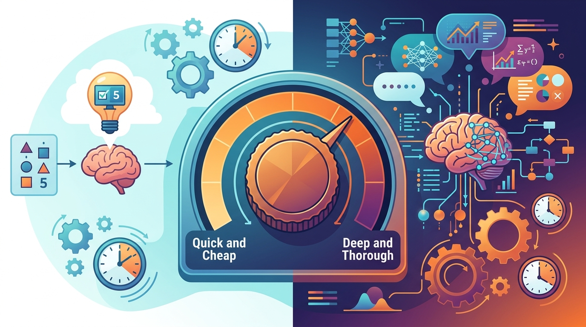

Thinking longer before acting is not a delay; it is the strategy that makes fewer actions necessary.
Agent X AI Agent
Prerequisites
This section builds on agent foundations from Section 21.1: Foundations of AI Agents, tool use patterns in Section 21.2: Tool Use and Function Calling, and the decoding strategies covered in Section 5.3.
Think of a reasoning model as a chess player with a variable time control. In blitz chess (standard models), the player makes moves instantly based on pattern recognition. In classical chess (reasoning models), the player spends minutes analyzing positions before committing to a move. The key insight for agent design is that not every position requires deep analysis. Opening moves (simple tool calls) benefit from speed, while critical middlegame positions (complex planning, ambiguous queries) benefit from extended thought. A well-designed agent architecture gives the reasoning model a "thinking budget" and allocates it strategically, spending more tokens on planning and less on routine execution steps.
Reasoning models represent a paradigm shift in agent architecture. Traditional LLM agents rely on external scaffolding (ReAct loops, chain-of-thought prompts, multi-step planners) to decompose complex tasks. Reasoning models like OpenAI's o1/o3, Anthropic's Claude with extended thinking, and DeepSeek-R1 internalize much of this decomposition within the model's own inference process, using test-time compute to "think" before responding. This changes what the agent loop needs to do: instead of the scaffolding code breaking problems into steps, the model itself can plan, backtrack, and self-correct during a single generation. The prompt engineering techniques from Section 10.1 still apply, but reasoning models require a fundamentally different prompting style that gives them room to think rather than prescribing step-by-step instructions.
1. What Makes Reasoning Models Different
Standard LLMs generate tokens left to right in a single pass. Each token prediction is conditioned on the previous tokens, but there is no explicit mechanism for the model to pause, reconsider, or explore alternative approaches mid-generation. When you ask GPT-4 to solve a multi-step math problem, it commits to an approach with the first few tokens and cannot easily recover if that approach leads to a dead end.
Reasoning models change this by allocating additional compute at inference time. Rather than generating the final answer immediately, these models first produce an internal chain of reasoning (sometimes called "thinking tokens" or "extended thinking") that explores the problem space, considers alternatives, checks intermediate results, and only then produces a final answer. The critical architectural differences include:
- Test-time compute scaling: Instead of a fixed forward pass, reasoning models can use variable amounts of computation depending on problem difficulty. A simple factual question might use 100 thinking tokens, while a complex planning problem might use 10,000.
- Internal search and backtracking: The model can explore multiple solution paths within its thinking process, abandon unpromising approaches, and try alternatives without requiring the external scaffolding to manage retries.
- Self-verification: Before producing a final answer, the model can check its own reasoning for consistency, catch arithmetic errors, and validate that its solution actually addresses the original question.
- Reduced need for external chain-of-thought prompting: Because reasoning happens internally, explicit "think step by step" instructions become less necessary and can sometimes even degrade performance by conflicting with the model's internal reasoning process.
| Property | Standard Model (GPT-4o, Claude Sonnet) | Reasoning Model (o3, Claude with Thinking) |
|---|---|---|
| Inference cost | Fixed per token | Variable; thinking tokens add cost |
| Latency | Predictable, fast | Variable, sometimes 30+ seconds |
| Planning ability | Requires external scaffolding | Strong internal planning |
| Error recovery | Needs retry loops | Self-corrects during thinking |
| Prompting style | Detailed instructions help | Concise goals; avoid over-specifying |
| Best for agents | High-throughput, simple tool calls | Complex planning, ambiguous tasks |
2. How Reasoning Models Change the Agent Loop
The classic ReAct loop (Thought, Action, Observation) was designed to compensate for the fact that standard LLMs cannot plan well in a single generation. The agent scaffolding forces the model to think explicitly, take one action, observe the result, and then think again. With reasoning models, much of this explicit scaffolding becomes redundant because the model can perform multi-step reasoning internally before deciding which tool to call.
The Traditional Agent Loop vs. the Reasoning Agent Loop
In a traditional ReAct agent, you might see five or six loop iterations where the model thinks, calls a tool, reads the result, thinks again, calls another tool, and so on. Each iteration requires a full LLM call. With a reasoning model as the backbone, the agent can often consolidate multiple reasoning steps into a single inference call, decide on several tool calls at once (parallel tool use), and reduce the total number of loop iterations. This means fewer API calls, which can offset the higher per-call cost of reasoning tokens.
Practical Impact on Agent Design
When building agents with reasoning model backbones, several design patterns change. First, the system prompt should describe the goal and constraints concisely rather than prescribing a step-by-step procedure. Reasoning models perform better when given room to develop their own approach. Second, parallel tool calling becomes more natural because the model can plan multiple information-gathering steps during its thinking phase and request them simultaneously. Third, the number of maximum loop iterations can often be reduced because each iteration accomplishes more. Code Fragment 21.5.1 below puts this into practice.
# implement reasoning_agent_step
# Key operations: agent orchestration, tool integration, API interaction
import anthropic
client = anthropic.Anthropic()
# Agent with extended thinking enabled
# Note: the model plans internally before deciding on tool calls
def reasoning_agent_step(messages, tools, thinking_budget=10000):
"""Single step of a reasoning-model agent loop."""
response = client.messages.create(
model="claude-sonnet-4-20250514",
max_tokens=16000,
thinking={
"type": "enabled",
"budget_tokens": thinking_budget
},
tools=tools,
messages=messages
)
# Separate thinking blocks from content and tool use
thinking_blocks = [b for b in response.content if b.type == "thinking"]
tool_calls = [b for b in response.content if b.type == "tool_use"]
text_blocks = [b for b in response.content if b.type == "text"]
return {
"thinking": thinking_blocks,
"tool_calls": tool_calls, # May contain multiple parallel calls
"text": text_blocks,
"stop_reason": response.stop_reason,
"usage": response.usage
}3. Thinking Budget Management in Agentic Contexts
Thinking tokens are not free. Each thinking token incurs the same cost as an output token, and reasoning models can easily consume thousands of thinking tokens per call. In an agentic context where the model might be called dozens of times per task, uncontrolled thinking budgets can make costs explode. The inference optimization strategies from Chapter 8 apply at the infrastructure level, but budget management within the agent loop is equally important. The solution is to allocate thinking budget strategically across the agent loop: more tokens for planning steps, fewer for routine execution.

Adaptive Budget Allocation
A practical strategy is to categorize each agent step by its cognitive complexity and assign thinking budgets accordingly. The planning phase (where the agent decides what to do) deserves the highest budget. Tool result interpretation (where the agent reads outputs and decides the next action) deserves a moderate budget. Simple formatting steps (where the agent assembles a final response from gathered information) deserve the minimum budget. Code Fragment 21.5.2 below puts this into practice.
# Define StepType, BudgetTracker; implement get_budget, record_usage, budget_exhausted
# Key operations: results display, agent orchestration, tool integration
from dataclasses import dataclass
from enum import Enum
class StepType(Enum):
PLANNING = "planning" # Complex: decide strategy
TOOL_ANALYSIS = "analysis" # Medium: interpret results
EXECUTION = "execution" # Simple: call tools as planned
FORMATTING = "formatting" # Minimal: assemble final output
# Thinking budget per step type (in tokens)
BUDGET_MAP = {
StepType.PLANNING: 10000, # Full reasoning for strategy
StepType.TOOL_ANALYSIS: 5000, # Moderate for interpretation
StepType.EXECUTION: 2000, # Light reasoning for tool calls
StepType.FORMATTING: 1024, # Minimum for assembly
}
@dataclass
class BudgetTracker:
"""Track and enforce thinking budget across agent loop."""
total_budget: int = 50000 # Max thinking tokens for entire task
spent: int = 0
def get_budget(self, step_type: StepType) -> int:
"""Return thinking budget for this step, capped by remaining total."""
remaining = self.total_budget - self.spent
requested = BUDGET_MAP[step_type]
return min(requested, max(remaining, 1024))
def record_usage(self, thinking_tokens: int):
self.spent += thinking_tokens
@property
def budget_exhausted(self) -> bool:
return self.spent >= self.total_budget
# Usage in an agent loop
tracker = BudgetTracker(total_budget=50000)
# Planning step gets full budget
plan_budget = tracker.get_budget(StepType.PLANNING)
print(f"Planning budget: {plan_budget} tokens") # 10000
# After planning used 8000 thinking tokens
tracker.record_usage(8000)
# Execution steps get smaller budgets
exec_budget = tracker.get_budget(StepType.EXECUTION)
print(f"Execution budget: {exec_budget} tokens") # 2000
print(f"Total spent: {tracker.spent}/{tracker.total_budget}")Reasoning models can "overthink" simple problems, spending thousands of thinking tokens on tasks that a standard model handles in milliseconds. A customer service agent that needs to look up an order status does not benefit from 10,000 tokens of internal deliberation. Always profile your agent's thinking token usage across representative tasks. If the model consistently uses its full thinking budget on simple queries, your budget allocation is too generous for that step type.
4. When to Use Reasoning vs. Standard Models
The choice between a reasoning model and a standard model as an agent backbone is not binary. The most effective production agents use a hybrid approach: reasoning models for the steps that benefit from extended deliberation, and standard models for the steps that need speed and low cost. The decision depends on three factors: task complexity, latency requirements, and cost constraints. Code Fragment 21.5.3 below puts this into practice.
Decision Framework
- Use reasoning models when: The task requires multi-step planning (e.g., "research this topic and write a report"), ambiguous queries need interpretation, the agent must choose between many possible tool sequences, or errors are expensive to recover from.
- Use standard models when: The task is a straightforward tool call (e.g., "what is the weather in Tokyo"), latency requirements are strict (under 2 seconds), the task is high-volume with tight cost budgets, or the agent is executing a plan that was already created by a reasoning step.
- Use a hybrid approach when: The overall task is complex but contains both planning and execution phases. Let a reasoning model create the plan, then let a standard model execute each step of that plan.
The Hybrid Agent Pattern
# implement hybrid_agent
# Key operations: agent orchestration, tool integration, API interaction
import openai
client = openai.OpenAI()
def hybrid_agent(task: str, tools: list):
"""Use a reasoning model for planning, standard model for execution."""
# Phase 1: Planning with reasoning model
plan_response = client.chat.completions.create(
model="o3",
reasoning_effort="high", # Full reasoning for planning
messages=[{
"role": "user",
"content": (
f"You are a planning agent. Given this task, create a step-by-step "
f"plan using the available tools. Output valid JSON.\n\n"
f"Task: {task}\n"
f"Available tools: {[t['function']['name'] for t in tools]}"
)
}]
)
plan = parse_plan(plan_response.choices[0].message.content)
# Phase 2: Execution with standard model (fast, cheap)
results = []
for step in plan["steps"]:
exec_response = client.chat.completions.create(
model="gpt-4o", # Fast model for execution
messages=[{
"role": "user",
"content": f"Execute this step: {step['description']}"
}],
tools=tools
)
results.append(execute_tool_calls(exec_response))
# Phase 3: Synthesis with reasoning model (verify and combine)
synthesis = client.chat.completions.create(
model="o3",
reasoning_effort="medium", # Medium reasoning for synthesis
messages=[{
"role": "user",
"content": f"Original task: {task}\nResults: {results}\nSynthesize a final answer."
}]
)
return synthesis.choices[0].message.content5. Cost, Latency, and Accuracy Trade-offs
Reasoning models introduce a three-way trade-off that does not exist with standard models. Increasing the thinking budget improves accuracy on complex tasks but increases both cost and latency. The right balance depends entirely on your application.
| Scenario | Reasoning Effort | Typical Latency | Cost Multiplier | Accuracy Gain |
|---|---|---|---|---|
| Simple Q&A agent | Low / None | 1-3 seconds | 1x (standard model) | Negligible |
| Customer support routing | Low | 3-5 seconds | 1.5x | +5-10% |
| Multi-step research agent | Medium | 8-15 seconds per step | 3-5x | +15-25% |
| Code generation with verification | High | 15-45 seconds | 5-10x | +20-40% |
| Legal/medical analysis agent | High | 30-60 seconds | 8-15x | +30-50% |
The key insight is that reasoning effort should scale with the stakes, not the complexity of the prompt. A complex but low-stakes task (generating creative writing options) may not justify high reasoning effort, while a simple but high-stakes task (approving a financial transaction) may warrant deep verification.
6. Reasoning Models for Planning vs. Execution
The most impactful use of reasoning models in agent architectures is during the planning phase. Planning requires the model to consider the full problem space, anticipate potential obstacles, and construct a coherent sequence of actions. These are exactly the capabilities that benefit most from extended thinking. Execution, by contrast, typically involves calling a specific tool with specific parameters, a task where speed matters more than deliberation.
Empirical Evidence
Benchmarks on agentic tasks (SWE-bench, WebArena, GAIA) consistently show that reasoning models outperform standard models most dramatically on tasks requiring multi-step planning. On SWE-bench Verified, models with extended thinking solve 20-30% more issues than their non-reasoning counterparts, primarily because they produce better plans for navigating codebases and understanding bug reports. On simpler tool-use benchmarks like BFCL (Berkeley Function Calling Leaderboard), the gap narrows considerably because function calling is largely a pattern-matching task that does not benefit much from extended deliberation.
OpenAI's internal testing revealed that o1 would sometimes spend 30 seconds "thinking" about whether to call a weather API, carefully reasoning about timezone conversions, unit preferences, and edge cases, only to produce the exact same API call that GPT-4o generates in 200 milliseconds. The team started calling this "existential weather forecasting." It is a perfect illustration of why not every agent step needs a reasoning model.
7. Configuring Reasoning Effort Across Providers
Each major provider exposes different mechanisms for controlling reasoning behavior. Understanding these differences is essential for building portable agent architectures.
- OpenAI (o1, o3, o4-mini): The
reasoning_effortparameter accepts "low", "medium", or "high". Lower effort means fewer internal thinking tokens and faster, cheaper responses. Thereasoningparameter controls whether thinking summaries are returned to the caller. - Anthropic (Claude with extended thinking): The
thinking.budget_tokensparameter sets an explicit token ceiling for the thinking phase. The model may use fewer tokens if the problem is simple. Thinking content is returned as separatethinkingblocks in the response. - DeepSeek (R1): Reasoning is always on; the model produces
<think>...</think>blocks in its output. You can parse these blocks to separate reasoning from final answers. There is no explicit budget control, but you can setmax_tokensto indirectly limit thinking length.
When switching between reasoning model providers, be aware that "medium" effort on OpenAI and a 5,000-token budget on Anthropic are not equivalent. Each provider's model has different reasoning efficiency. Always benchmark your specific agent tasks across providers rather than assuming parity based on effort labels.
📝 Knowledge Check
Show Answer
Show Answer
Show Answer
Open Questions:
- Can an agent learn to dynamically allocate its own thinking budget based on task difficulty, without relying on hand-coded heuristics? Early work on "adaptive compute" suggests this is possible but remains an active research area.
- How should we evaluate reasoning models in agentic settings? Token efficiency (accuracy per thinking token) may matter more than raw accuracy, but standard benchmarks do not capture this dimension.
Recent Developments (2024-2025):
- OpenAI's o3 and o4-mini (2025) introduced configurable reasoning effort levels, allowing developers to tune the cost/accuracy trade-off per API call. This makes hybrid agent architectures significantly more practical.
- Anthropic's Claude extended thinking (2025) demonstrated that thinking budgets can be set explicitly in tokens, giving agent developers fine-grained control over reasoning depth at each step of the agent loop.
- DeepSeek-R1 (2025) showed that open-weight reasoning models can achieve competitive performance with proprietary systems, enabling on-premises deployment of reasoning agents for sensitive applications.
Explore Further: Build two versions of the same agent: one using a reasoning model for all steps, and one using the hybrid pattern (reasoning for planning, standard for execution). Compare total cost, latency, and task completion accuracy across 50 representative tasks.
The hybrid pattern of using reasoning models for planning and standard models for execution mirrors Daniel Kahneman's dual-process theory of human cognition. Kahneman described two systems: System 1 (fast, automatic, low-effort) and System 2 (slow, deliberate, effortful). Standard LLMs operate like System 1: they generate rapid, pattern-matched responses with minimal "deliberation." Reasoning models like o3 and DeepSeek-R1 implement something closer to System 2: they spend additional tokens (and time) on explicit chain-of-thought reasoning before committing to an answer. The hybrid agent pattern, where a reasoning model plans and a standard model executes, is an artificial System 2 supervising an artificial System 1. This parallel suggests that the distinction between fast intuition and slow reasoning may not be unique to human brains but is instead a fundamental architectural pattern that arises whenever a bounded agent must allocate limited computational resources between reflection and action.
Key Takeaways
- Reasoning models internalize the planning that agents previously needed external scaffolding to perform. This reduces loop iterations but increases per-call cost and latency.
- Not every agent step benefits from extended thinking. Simple tool calls, data retrieval, and formatting steps run faster and cheaper on standard models.
- Manage thinking budgets strategically. Allocate the largest budgets to planning steps and the smallest to routine execution. Track total thinking token usage per task to prevent cost overruns.
- The hybrid pattern (reasoning for planning, standard for execution) often delivers the best cost-to-accuracy ratio. Use reasoning models where they add the most value, not everywhere.
- Reasoning effort should scale with stakes, not just complexity. High-stakes decisions warrant deep reasoning even when the problem seems simple; low-stakes tasks rarely justify the overhead.
- Provider APIs differ significantly in how they expose reasoning controls. Benchmark your specific tasks across providers rather than assuming equivalence between effort levels or token budgets.
Who: A legal tech startup building a contract analysis platform for mid-market companies
Situation: The platform needed an agent that could review contracts, flag non-standard clauses, compare terms against company policies, and generate summary reports. Early prototypes using GPT-4o missed subtle clause interactions 30% of the time.
Problem: Switching entirely to a reasoning model (o3 with high effort) improved accuracy to 92% but increased per-contract cost from $0.40 to $6.50 and review time from 45 seconds to 8 minutes. Customers were unwilling to wait that long for routine reviews.
Dilemma: Using a reasoning model for everything was too slow and expensive. Using a standard model for everything missed critical issues. There was no obvious dividing line between "simple" and "complex" clauses.
Decision: They implemented a two-pass hybrid architecture: a fast first pass with GPT-4o extracted and classified all clauses, then a targeted second pass with o3 (medium effort) deeply analyzed only the clauses flagged as non-standard or high-risk by the first pass.
How: The first pass ran in 30 seconds and identified roughly 15% of clauses as needing deeper review. The second pass spent its thinking budget only on those flagged clauses, running in parallel. Total cost averaged $1.20 per contract, and total time averaged 90 seconds.
Result: Accuracy rose to 91% (matching the all-reasoning approach within margin of error), while cost dropped 82% and latency dropped 81% compared to the reasoning-only approach. The hybrid approach also provided explainability: the first pass classification helped users understand why certain clauses received extra scrutiny.
Lesson: The hybrid pattern (standard model for triage, reasoning model for targeted analysis) often delivers near-maximum accuracy at a fraction of the cost and latency. The key is building a reliable triage step that correctly identifies which inputs deserve deep reasoning.
What's Next?
In the next chapter, Chapter 22: Multi-Agent Systems, we explore how multiple agents collaborate, coordinate, and communicate to solve tasks that exceed the capabilities of any single agent.